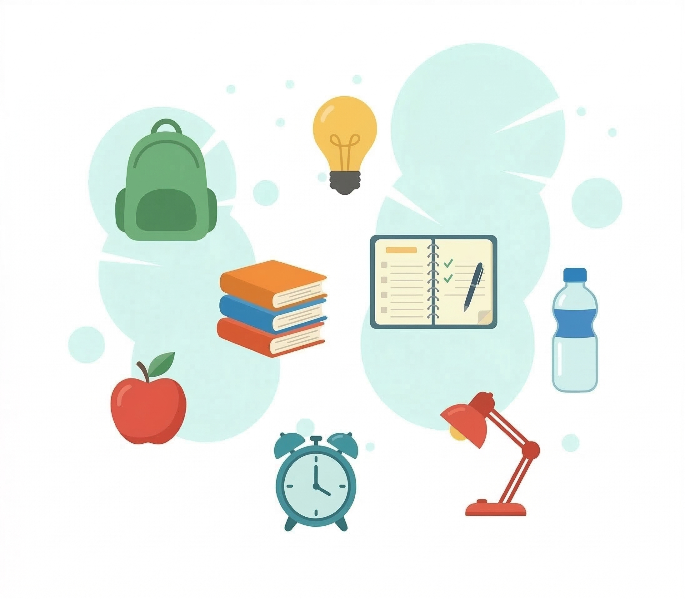

🎒 Transición de 6º EP a 1º ESO
IES Didín Puig · Orientación
📚 ¿Qué es la ESO?
Se llama Educación Secundaria Obligatoria (ESO).
Es SECUNDARIA porque viene después de la Educación Primaria.
Es OBLIGATORIA porque la deben cursar todos los jóvenes entre 12 y 16 años.
Tiene una duración de 4 cursos.
🏫 Sistema educativo
Este es un esquema simplificado del sistema educativo.

📖 ¿Cómo es la ESO?
En secundaria las asignaturas ya no se llaman áreas, ahora se llaman materias.
Tendrás un total de 12 materias diferentes.
Algunas ya las conoces: Valenciano, Castellano, Inglés, Matemáticas, Educación Física, Música o Plástica.
Otras cambian un poco. Por ejemplo, Conocimiento del Medio, que en la ESO se divide en dos:
- 🌍 Geografía e Historia
- 🔬 Biología y Geología
También aparecerán materias nuevas como Tecnología y Digitalización o una materia optativa como por ejemplo Proyecto Interdisciplinar.
Cada materia tendrá un profesor o profesora diferente y tendrás una tutoría semanal.
En las siguientes páginas tendrás información detallada de cada curso, las materias que se imparten y distribución de las horas lectivas semanales.
✅ Consejos para tener éxito en la ESO
Te ayudará a organizar deberes, trabajos y exámenes.
📚 Crea un hábito de estudio.
Estudia un poco cada tarde.
✏️ Repasa lo que aprendes.
Haz esquemas y revisa los apuntes.
👂 Presta atención en clase.
Cuanto más atiendas, menos tendrás que estudiar en casa.
😴 Duerme bien.
Dormir suficiente te ayudará a concentrarte.
🍎 Lleva almuerzo.
Para tener energía durante la mañana.
🎒 Prepara la mochila cada tarde.
Revisa el horario del día siguiente.
